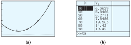

Section 6.6 Curve Fitting
¶Subsection Introduction
In Section 1.6, we used linear regression to fit a line to a collection of data points. If the data points do not cluster around a line, it does not make sense to describe them by a linear function. Compare the scatterplots shown below.
The points in figure (a) are roughly linear in appearance, but the points in figure (b) are not. However, we can visualize a parabola that would approximate the data we will. In this section, we will see how to fit a quadratic function to a collection of data points.
We will need to solve a special type of \(3 \times 3\) linear system, that is, a linear system of three equations in three variables. We can solve these systems using the elimination method. See Appendix A.5 to review the elimination method.
Example 6.109.
Use elimination to solve the system of equations.
We first eliminate \(c\) from the system by combining the equations in pairs. We can add \(-1\) times Equation (2) to Equation (1) to get a new equation in two variables:
| \(3a\) | \(+\) | \(2b\) | \(+\) | \(c\) | \(=\) | \(-1\) | \(\hphantom{blank}\) | \((1)\) |
| \(-a\) | \(+\) | \(2b\) | \(-\) | \(c\) | \(=\) | \(3\) | \(\hphantom{blank}\) | \(-1\text{ times Equation }(2)\) |
| \(2a\) | \(+\) | \(4b\) | \(\) | \(\) | \(=\) | \(2\) | \(\hphantom{blank}\) | \((4)\) |
Next, we add \(-1\) times Equation (2) to Equation (3) to get a second equation in two variables:
| \(2a\) | \(+\) | \(3b\) | \(+\) | \(c\) | \(=\) | \(-4\) | \(\hphantom{blank}\) | \((3)\) |
| \(-a\) | \(+\) | \(2b\) | \(-\) | \(c\) | \(=\) | \(3\) | \(\hphantom{blank}\) | \(-1\times (2)\) |
| \(a\) | \(+\) | \(5b\) | \(\) | \(\) | \(=\) | \(7\) | \(\hphantom{blank}\) | \((5)\) |
By combining Equations (4) and (5), we have a \(2 \times 2\) linear system, which we can solve as usual.
To eliminate \(a\text{,}\) we add \(-2\) times Equation (5) to Equation (4):
| \(2a\) | \(+\) | \(4b\) | \(=\) | \(2\) | \(\hphantom{blank}\) | \((4)\) |
| \(-2a\) | \(-\) | \(10b\) | \(=\) | \(-14\) | \(\) | \(-2 \times(5)\) |
| \(\) | \(\) | \(-6b\) | \(=\) | \(-12\) | \(\) | \(\) |
Solving this last equation gives us \(b = 2\text{.}\) Then we substitute \(b = 2\) into either of Equations (4) or (5) to find \(a = -3\text{.}\) Finally, we substitute both values into one of the three original equations to find \(c = 4\text{.}\) The solution of the system is \(a = -3\text{,}\) \(b = 2\text{,}\) \(c = 4\text{.}\)
Notebook 6.110. Practice 1.
Subsection Finding a Quadratic Function through Three Points
Every linear function can be written in the form
To find a specific line, we must find values for the two parameters (constants) \(m\) and \(b\text{.}\) We need two data points in order to find those two parameters. A quadratic function, however, has three parameters, \(a\text{,}\) \(b\text{,}\) and \(c\text{:}\)
To find these parameters, we need three data points. We then use the method of elimination to solve a system of three linear equations.
Example 6.111.
Find values for \(a\text{,}\) \(b\text{,}\) and \(c\) so that the points \((1, 3)\text{,}\) \((3, 5)\text{,}\) and \((4, 9)\) lie on the graph of \(y = ax^2 + bx + c\text{.}\)
We substitute the coordinates of each of the three points into the equation of the parabola to obtain three equations:
or, equivalently,
This is a system of three equations in the three unknowns \(a\text{,}\) \(b\text{,}\) and \(c\text{.}\) To solve the system, we first eliminate \(c\text{.}\) Add \(-1\) times Equation (1) to Equation (2) to obtain
and add \(-1\) times Equation (1) to Equation (3) to get
We now have a system of two linear equations in two variables:
We eliminate \(b\) from Equations (4) and (5): Add \(-3\) times Equation (4) to \(2\) times Equation (5) to get
| \(-24a\) | \(-\) | \(6b\) | \(=\) | \(-6\) | \(\hphantom{blank}\) | \(-3\times(4)\) |
| \(30a\) | \(+\) | \(6b\) | \(=\) | \(12\) | \(\) | \(2\times(5)\) |
| \(6a\) | \(\) | \(\) | \(=\) | \(6\) | \(\) | \(\) |
or \(a = 1\text{.}\) We substitute \(1\) for \(a\) in Equation (4) to find
Finally, we substitute \(-3\) for \(b\) and \(1\) for \(a\) in Equation (1) to find
Thus, the equation of the parabola is
The parabola and the three points are shown below.

Notebook 6.112. QuickCheck 1.
Notebook 6.113. Practice 2.
The simplest way to fit a parabola to a set of data points is to pick three of the points and find the equation of the parabola that passes through those three points.
Example 6.114.
Major Motors Corporation is testing a new car designed for in-town driving. The data below show the cost of driving the car at different speeds. The speeds, \(v\text{,}\) are given in miles per hour, and the cost, \(C\text{,}\) includes fuel and maintenance for driving the car \(100\) miles at that speed.
| \(v\) | \(30\) | \(40\) | \(50\) | \(60\) | \(70\) |
| \(C\) | \(6.50\) | \(6.00\) | \(6.20\) | \(7.80\) | \(10.60\) |
Find a possible quadratic model for \(C\) as a function of \(v\text{,}\) \(C = av^2 + bv + c\text{.}\)
When we plot the data, it is clear that the relationship between \(v\) and \(C\) is not linear, but it may be quadratic, as shown at right.
We will use the last three data points, \((50, 6.20)\text{,}\) \((60, 7.80)\text{,}\) and \((70, 10.60)\text{,}\) to fit a parabola to the data. We would like to find the coefficients \(a\text{,}\) \(b\text{,}\) and \(c\) of a parabola \(C = av^2 + bv + c\) that includes the three data points. This gives us a system of equations:

Eliminating \(c\) from Equations (1) and (2) yields Equation (4), and eliminating \(c\) from Equations (2) and (3) yields Equation (5).
Eliminating \(b\) from Equations (4) and (5) gives us
We substitute this value into Equation (4) to find \(b = -0.5\text{,}\) then substitute both values into Equation (1) to find \(c = 16.2\text{.}\) Thus, our quadratic model is
The graph of this function, along with the data points, is shown at right.
Notebook 6.115. Practice 3.
Notebook 6.116. Pause and Reflect.
Subsection Finding an Equation in Vertex Form
It is easier to find a quadratic model if one of the points we know happens to be the vertex of the parabola. In that case, we need only one other point, and we can use the vertex form to find its equation.
Example 6.117.
When Andre practices free-throws at the park, the ball leaves his hands at a height of \(7\) feet and reaches the vertex of its trajectory \(10\) feet away at a height of \(11\) feet, as shown at right.

Find a quadratic function for the ball's trajectory.
Do you think Andre's free-throw will score on a basketball court where the hoop is \(15\) feet from the shooter and \(10\) feet high?
-
If Andre's feet are at the origin, then the vertex of the ball's trajectory is the point \((10, 11)\text{,}\) and its \(y\)-intercept is \((0, 7)\text{.}\) Start with the vertex form for a parabola:
\begin{equation*} \begin{aligned}[t] y \amp = a(x - x_v)^2 + y_v\\ y \amp= a(x - 10)^2 + 11 \end{aligned} \end{equation*}We still need to know the value of \(a\text{.}\) We can substitute the coordinates of any point on the parabola for \(x\) and \(y\) and solve for \(a\text{.}\) We will use the point \((0, 7)\text{:}\)
\begin{equation*} \begin{aligned}[t] 7 \amp= a(0 - 10)^2 + 11\\ 7 \amp= 100a + 11\\ a \amp= -0.04 \end{aligned} \end{equation*}The equation of the trajectory is \(y = -0.04(x - 10)^2 + 11\text{.}\)
-
We would like to know if the point \((15, 10)\) is on the trajectory of Andre's free-throw. Substitute \(x = 15\) into the equation:
\begin{equation*} \begin{aligned}[t] y \amp= -0.04(15 - 10)^2 + 11\\ \amp= -0.04(25) + 11 = 10 \end{aligned} \end{equation*}Andre's shot will score.
Notebook 6.118. QuickCheck 2.
Notebook 6.119. Practice 4.
Technology 6.120. Using a Calculator for Quadratic Regression.
We can use a graphing calculator to find an approximate quadratic fit for a set of data. The procedure is similar to the steps for linear regression outlined in Section 1.2.
Example 6.121.
Use your calculator to find a quadratic fit for the data in Example 6.114.
How many of the given data points actually lie on the graph of the quadratic approximation?
-
We press
STATENTERand enter the data under columns \(L_1\) and \(L_2\text{,}\) as shown below. Next, we calculate the quadratic regression equation and store it in \(Y_1\) by pressingSTAT\(\boxed{\rightarrow}\) \(5\)VARS\(\boxed{\rightarrow}\) \(1\) \(1\)ENTER.The regression equation has the form \(y = ax^2 + bx + c\text{,}\) where \(a = 0.0057\text{,}\) \(b = -0.47\text{,}\) and \(c = 15.56\text{.}\) Notice that \(a\text{,}\) \(b\text{,}\) and \(c\) are all close to the values we computed in Example 6.114.

-
Next, we will graph the data and the regression equation. We press
Y=and select Plot1, then pressZOOM\(9\) to see the graph shown below. The parabola seems to pass close to all the data points.However, try using either the value feature or a table to find the \(y\)-coordinates of points on the regression curve. By comparing these \(y\)-coordinates with our original data points, we find that none of the given data points lies precisely on the parabola.

Notebook 6.122. Practice 5.
Notebook 6.123. QuickCheck 3.
Caution 6.124.
We must be careful that our data set gives a complete picture of the situation we want to model. A regression equation may fit a particular collection of data and still be a poor model if the rest of the data diverge from the regression graph.

In Example 6.114, suppose Major Motors had collected only the first three data points and fit a line through them, as shown at left. This regression line gives poor predictions for the cost of driving at 60 or 70 miles per hour.
Example 6.125.
Francine records the height of the tip of the minute hand on the classroom’s clock at different times. The data are shown in the table, where time is measured in minutes since noon. (A negative time indicates a number of minutes before noon.) Find a quadratic regression equation for the data and use it to predict the height of the minute hand's tip at \(40\) minutes past noon. Do you believe this prediction is valid?
| Time (minutes) |
\(-25\) | \(-20\) | \(-15\) | \(-10\) | \(-5\) | \(0\) | \(5\) | \(10\) | \(15\) | \(20\) | \(25\) |
| Height (feet) |
\(7.13\) | \(7.50\) | \(8.00\) | \(8.50\) | \(8.87\) | \(9.00\) | \(8.87\) | \(8.50\) | \(8.80\) | \(7.50\) | \(7.13\) |
We enter the time data under \(L_1\) and the height data under \(L_2\text{.}\) Then we calculate and store the quadratic regression equation in \(Y_1\text{,}\) as we did in Example 6.121. The regression equation is
From either the graph of the regression equation or from the table (see figure below), we can see that the fit is not perfect, although the curve certainly fits the data better than any straight line could.

If we scroll down the table, we find that this equation predicts a height of approximately \(4.08\) feet at time \(40\) minutes. (See figure (c).) This is a preposterous estimate! The position of the minute hand at \(40\) minutes after noon should be the same as it was exactly one hour earlier (at 20 minutes before noon), when it was \(7.50\) feet.
Using the wrong type of function to fit the data is a common error in making predictions. We know that the minute hand of a clock repeats its position every \(60\) minutes. The graph of the height of its tip oscillates up and down, repeating the same pattern over and over. We cannot describe such a graph using either a linear or a quadratic function.
The graph of the height is shown at left, along with the graph of our quadratic regression equation. You can see that the regression equation fits the actual curve only on a small interval.
Your calculator can always compute a regression equation, but that equation is not necessarily appropriate for your data. Choosing a reasonable type of regression equation for a particular data set requires knowledge of different kinds of models and the physical or natural laws that govern the situation at hand.
Notebook 6.126. QuickCheck 4.
Notebook 6.127. Practice 6.

Notebook 6.128. Pause and Reflect.
Subsection Section Summary
¶Subsubsection Vocabulary
Look up the definitions of new terms in the Glossary.
Elimination method
Quadratic regression
Subsubsection CONCEPTS
We need three points to determine a parabola.
We can use the method of elimination to find the equation of a parabola through three points.
If we know the vertex of a parabola, we need only one other point to find its equation.
We can use quadratic regression to fit a parabola to a collection of data points.
Subsubsection STUDY QUESTIONS
How many points are necessary to determine a parabola?
Why do we need a second point to find the equation of a parabola if we know its vertex?
How can you decide whether linear regression, quadratic regression, or neither one is appropriate for a collection of data?
Subsubsection SKILLS
Practice each skill in the Homework problems listed.
Fit a quadratic equation through three points: #5–12
Find a quadratic model in vertex form: #13–30
Use quadratic regression to fit a parabola to data: #31–34
Exercises Homework 6.6
¶For Problems 1–4, solve the system by elimination. Begin by eliminating \(c\text{.}\)
1.
\(\begin{alignedat}[t]{5} a \amp {}+{} \amp b \amp {}+{} \amp c\amp {}={} \amp -3 \\ a \amp {}-{} \amp b \amp {}+{} \amp c \amp {}={} \amp -9 \\ 4a \amp {}+{} \amp 2b \amp {}+{} \amp c \amp {}={} \amp -6 \end{alignedat} \)
2.
\(\begin{alignedat}[t]{5} a \amp {}+{} \amp b \amp {}+{} \amp c\amp {}={} \amp 10 \\ 4a \amp {}+{} \amp 2b \amp {}+{} \amp c \amp {}={} \amp 19 \\ 9a \amp {}+{} \amp 3b \amp {}+{} \amp c \amp {}={} \amp 38 \end{alignedat} \)
3.
\(\begin{alignedat}[t]{5} a \amp {}-{} \amp b \amp {}+{} \amp c\amp {}={} \amp 12\\ 4a \amp {}-{} \amp 2b \amp {}+{} \amp c \amp {}={} \amp 19 \\ 9a \amp {}+{} \amp 3b \amp {}+{} \amp c \amp {}={} \amp 4 \end{alignedat} \)
4.
\(\begin{alignedat}[t]{5} 4a \amp {}+{} \amp 2b \amp {}+{} \amp c\amp {}={} \amp 14 \\ 9a \amp {}-{} \amp 3b \amp {}+{} \amp c \amp {}={} \amp -41 \\ 16a \amp {}-{} \amp 4b \amp {}+{} \amp c \amp {}={} \amp -70 \end{alignedat} \)
For Problems 5–12, find a quadratic equation that fits the data points.
5.
Find values for \(a\text{,}\) \(b\text{,}\) and \(c\) so that the graph of the parabola \(y = ax^2 + bx + c\) includes the points \((-1, 0)\text{,}\) \((2, 12)\text{,}\) and \((-2, 8)\text{.}\)
6.
Find values for \(a\text{,}\) \(b\text{,}\) and \(c\) so that the graph of the parabola \(y = ax^2 + bx + c\) includes the points \((-1, 2)\text{,}\) \((1, 6)\text{,}\) and \((2, 11)\text{.}\)
7.
A survey to determine what percent of different age groups regularly use marijuana collected the following data.
| Age | \(15\) | \(20\) | \(25\) | \(30\) |
| Percent | \(4\) | \(13\) | \(11\) | \(7\) |
Use the percentages for ages \(15\text{,}\) \(20\text{,}\) and \(30\) to fit a quadratic function to the data, \(P = ax^2 + bx + c\text{,}\) where \(x\) represents age.
What does your function predict for the percentage of \(25\)-year-olds who use marijuana?
Sketch the graph of your quadratic function and the given data on the same axes.
8.
The following data show the number of people of certain ages who were the victims of homicide in a large city last year.
| Age | \(10\) | \(20\) | \(30\) | \(40\) |
| Number of victims | \(12\) | \(62\) | \(72\) | \(40\) |
Use the first three data points to fit a quadratic function to the data, \(N = ax^2 + bx + c\text{,}\) where \(x\) represents age.
What does your function predict for the number of \(40\)-year-olds who were the victims of homicide?
Sketch the graph of your quadratic function and the given data on the same axes.
9.
The data below show Americans' annual per capita consumption of chicken for several years since \(1985\text{.}\)
| Year | \(1986\) | \(1987\) | \(1988\) | \(1989\) | \(1990\) |
| Pounds of chicken | \(51.3\) | \(55.5\) | \(57.4\) | \(60.8\) | \(63.6\) |
Use the values for \(1987\) through \(1989\) to fit a quadratic function to the data, \(C = at^2 + bt + c\text{,}\) where \(t\) is measured in years since \(1985\text{.}\)
What does your function predict for per capita chicken consumption in \(1990\text{?}\)
Sketch the graph of your function and the given data.
10.
The data show sales of in-line skates at a sporting goods store at the beach.
| Year | \(1990\) | \(1991\) | \(1992\) | \(1993\) | \(1994\) |
| Skate sold | \(54\) | \(82\) | \(194\) | \(446\) | \(726\) |
Use the values for \(1991\) through \(1993\) to fit a quadratic function to the data, \(S = at^2 + bt + c\text{,}\) where \(t\) is measured in years since \(1990\text{.}\)
What does your function predict for the number of pairs of skates sold in \(1994\text{?}\)
Sketch the graph of your function and the given data.
11.
Find a quadratic function for the number of diagonals that can be drawn in a polygon of n sides. Some data are provided.
| Sides | \(4\) | \(5\) | \(6\) | \(7\) |
| Diagonals | \(2\) | \(5\) | \(9\) | \(14\) |
12.
You are driving at \(60\) miles per hour when you step on the brakes. Find a quadratic function for the distance in feet that your car travels in \(t\) seconds after braking. Some data are provided.
| Seconds | \(1\) | \(2\) | \(3\) | \(4\) |
| Feet | \(81\) | \(148\) | \(210\) | \(267\) |
13.
Write an equation for a parabola whose vertex is the point \((-2, 6)\text{.}\) (Many answers are possible.)
Find the value of \(a\) if the \(y\)-intercept of the parabola in part (a) is \(18\text{.}\)
14.
Write an equation for a parabola whose vertex is the point \((5,-10)\text{.}\) (Many answers are possible.)
Find the value of \(a\) if the \(y\)-intercept of the parabola in part (a) is \(-5\text{.}\)
15.
Write an equation for a parabola with vertex at \((0,-3)\) and one of its \(x\)-intercepts at \((2,0) \text{.}\)
Write an equation for a parabola with vertex at \((0,-3)\) and no \(x\)-intercepts.
16.
Write an equation for a parabola with vertex at \((4, 0)\) and \(y\)-intercept at \((0, 4)\text{.}\) How many \(x\)-intercepts does the parabola have?
17.
Find the equation for a parabola that has a vertex of \((30, 280)\) and passes through the point \((20, 80)\text{.}\)
18.
Find the equation for a parabola that has a vertex of \((-12,-40)\) and passes through the point \((6, 68)\text{.}\)
For Problems 19–26, find an equation for each parabola. Use the vertex form or the factored form of the equation, whichever is more appropriate.
19.

20.

21.

22.

23.

24.

25.

26.

27.
In skeet shooting, the clay pigeon is launched from a height of \(4\) feet and reaches a maximum height of \(164\) feet at a distance of \(80\) feet from the launch site.
Write a function for the height of the clay pigeon in terms of the horizontal distance it has traveled.
If the shooter misses the clay pigeon, how far from the launch site will it hit the ground?
28.
The batter in a softball game hits the ball when it is \(4\) feet above the ground. The ball reaches the greatest height on its trajectory, \(35\) feet, directly above the head of the left-fielder, who is \(200\) feet from home plate.
Write a function for the height of the softball in terms of its horizontal distance from home plate.
Will the ball clear the left field wall, which is \(10\) feet tall and \(375\) feet from home plate?
The cables on a suspension bridge hang in the shape of parabolas. For Problems 29–30, imagine a coordinate system superimposed on a diagram of the bridge, as shown in the figure.

29.
The Akashi Kaikyo bridge in Japan is the longest suspension bridge in the world, with a main span of \(1991\) meters. Its main towers are \(297\) meters tall. The roadbed of the bridge is \(14\) meters thick and clears the water below by \(65\) meters.
Find the coordinates of the vertex and one other point on the cable.
Use the points from part (a) to find an equation for the shape of the cable in vertex form.
30.
A suspension bridge joining Sicily to the tip of Italy over the Straits of Messina has been planned planned and canceled multiple times. The main span of the bridge should be \(3300\) meters, and its main towers \(375\) meters tall. The roadbed should be \(3\) meters thick, clearing the water below by \(65\) meters.
Find the coordinates of the vertex and one other point on the cable.
Use the points from part (a) to find an equation for the shape of the cable in vertex form.
31.
The Square Kilometre Array (SKA) is an international radio telescope project. Project members plan to build a telescope 30 times larger than the largest one currently available. The Australia Telescope National Facility held a workshop in 2005 to design an appropriate antenna. The antenna should be a parabolic dish with diameter from \(12\) to \(20\) meters, and the ratio of the focal length to the diameter should be \(0.4\text{.}\) The figure shows a cross section of the dish. (Source: www.atnf.csiro.au/projects/ska/)

You want to design a \(20\)-meter-diameter parabolic antenna for the project. What will the focal length of your antenna be?
The equation of the dish has the form \(y = \dfrac{x^2}{4F}\text{,}\) where \(F\) is the focal length. What is the equation of the parabola for your antenna?
What is the depth of your parabolic antenna?
32.
Some comets move about the sun in parabolic orbits. In 1973, the comet Kohoutek passed within 0.14 AU (astronomical units), or 21 million kilometers, of the Sun. Imagine a coordinate system superimposed on a diagram of the comet’s orbit, with the Sun at the origin, as shown in the figure. The units on each axis are measured in AU.

The comet's closest approach to the Sun (called perihelion) occurred at the vertex of the parabola. What were the comet’s coordinates at perihelion?
When the comet was first discovered, its coordinates were \((1.68, -4.9)\text{.}\) Find an equation for comet Kohoutek's orbit in vertex form.
Use your calculator's statistics features for Problems 33–38.
33.
The table shows the height of a projectile at different times after it was fired.
| Time (seconds) |
\(2\) | \(4\) | \(6\) | \(8\) | \(10\) | \(12\) | \(14\) |
| Height (meters) |
\(39.2\) | \(71.8\) | \(98.0\) | \(117.8\) | \(131.0\) | \(137.8\) | \(138.0\) |
Find the equation of the least-squares regression line for height in terms of time.
Use the linear regression equation to predict the height of the projectile \(15\) seconds after it was fired.
Make a scatterplot of the data and draw the regression line on the same axes.
Find the quadratic regression equation for height in terms of time.
Use the quadratic regression equation to predict the height of the projectile \(15\) seconds after it was fired.
Draw the quadratic regression curve on the graph from part (c).
Which model is more appropriate for the height of the projectile, linear or quadratic? Why?
34.
The table shows the height of a star-flare at different times after it exploded from the surface of a star.
| Time (seconds) |
\(0.2\) | \(0.4\) | \(0.6\) | \(0.8\) | \(1.0\) | \(1.2\) |
| Height (kilometers) |
\(6.8\) | \(12.5\) | \(17.1\) | \(20.5\) | \(22.8\) | \(23.9\) |
Find the equation of the least-squares regression line for height of the flare in terms of time.
Use the linear regression equation to predict the height of the flare \(1.4\) seconds after it exploded.
Make a scatterplot of the data and draw the regression line on the same axes.
Find the quadratic regression equation for height in terms of time.
Use the quadratic regression equation to predict the height of the flare \(1.4\) seconds after it exploded.
Draw the quadratic regression curve on the graph from part (c).
Which model is more appropriate for the height of the star-flare, linear or quadratic? Why?
35.
In the 1990s, an outbreak of mad cow disease (Creutzfeldt-Jakob disease) alarmed health officials in England. The table shows the number of deaths each year from the disease.
| Year | '94 | '95 | '96 | '97 | '98 | '99 | 2000 | '01 | '02 | '03 | '04 |
| Deaths | \(0\) | \(3\) | \(10\) | \(10\) | \(18\) | \(15\) | \(28\) | \(20\) | \(17\) | \(19\) | \(9\) |
(Source: www.cjd.ed.ac.uk/vcjdqsep05)
The Health Protection Agency determined that a quadratic model was the best-fitting model for the data. Find a quadratic regression equation for the data.
Use your model to estimate when the peak of the epidemic occurred and how many deaths from mad cow disease were expected in 2005.
36.
The table shows the amount of nitrogen fertilizer applied to a crop of soybeans per hectare of land in a trial in Thailand and the resulting yield.
| Nitrogen (kg) | \(0\) | \(15\) | \(30\) | \(60\) | \(120\) |
| Yield (tons) | \(2.12\) | \(2.46\) | \(2.65\) | \(2.80\) | \(2.60\) |
(Source: www.arc-avrdc.org)
Fit a quadratic regression equation to the data.
Use your model to predict the maximum yield and the amount of nitrogen needed.
37.
The number of daylight hours increases each day from the beginning of winter until the beginning of summer, and then begins to decrease. The table below gives the number of daylight hours in Delbert's hometown last year in terms of the number of days since January 1.
| Days since January 1 |
\(0\) | \(50\) | \(100\) | \(150\) | \(200\) | \(250\) | \(300\) |
| Hours of daylight |
\(9.8\) | \(10.9\) | \(12.7\) | \(14.1\) | \(13.9\) | \(12.5\) | \(10.7\) |
Find the equation of the least-squares regression line for the number of daylight hours in terms of the number of days since January 1.
Use the linear regression equation to predict the number of daylight hours \(365\) days after January 1.
Make a scatterplot of the data and draw the regression line on the same axes.
Find the quadratic regression equation for the number of daylight hours in terms of the number of days since January 1.
Use the quadratic regression equation to predict the number of daylight hours \(365\) days after January 1.
Draw the quadratic regression curve on the graph from part (c).
Predict the number of daylight hours \(365\) days since January 1 without using any regression equation. What does this tell you about the linear and quadratic models you found?
38.
To observers on Earth, the Moon looks like a disk that is completely illuminated at full moon and completely dark at new moon. The table below shows what fraction of the Moon is illuminated at \(5\)-day interval after the last full moon.
| Days since full moon |
\(0\) | \(5\) | \(10\) | \(15\) | \(20\) | \(25\) |
| Fraction illuminated |
\(1.000\) | \(0.734\) | \(0.236\) | \(0.001\) | \(0.279\) | \(0.785\) |
(Source: www.arc-avrdc.org)
Find the equation of the least-squares regression line for the fraction illuminated in terms of days.
Use the linear regression equation to predict the fraction illuminated \(30\) days after the full moon.
Make a scatterplot of the data and draw the regression line on the same axes.
Find the quadratic regression equation for the fraction illuminated in terms of days.
Use the quadratic regression equation to predict the fraction illuminated \(30\) days after the full moon.
Draw the quadratic regression curve on the graph from part (c).
Predict the fraction of the disk that is illuminated \(30\) days after the full moon without using any regression equation. What does this tell you about the linear and quadratic models you found?